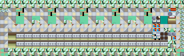
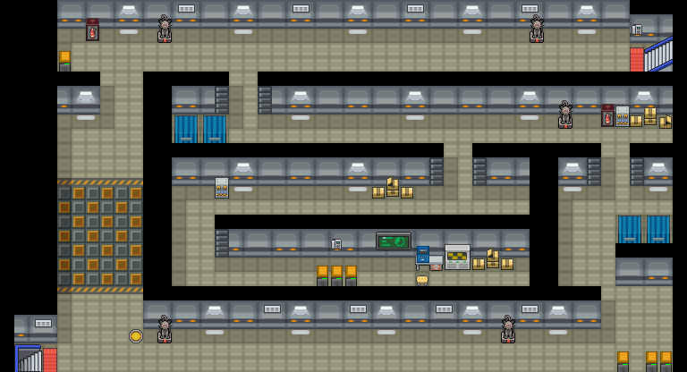

厉害伤药
喷雾式疗伤药。
获取：训练师之塔·商店 ／ 红莲岛·商店 ／ 山吹市·商店 ／ 烟墨市·商店 ／ 石英高原·商店 ／ 吉野市·商店 ／ 桔梗市·商店 ／ 桧皮镇·商店 ／ …等 30 处
用途
喷雾式疗伤药。 回复1只宝可梦200HP。
标价 1500 口袋：道具
获取方式
购买
- 训练师之塔（区域179） · 标价 1500 · 地图｜静态图 · 触发条件待补
- 红莲岛（区域96） · 标价 1500 · 地图｜静态图 · 触发条件待补
- 山吹市（区域98） · 标价 1500 · 地图｜静态图 · 触发条件待补
- 烟墨市（区域152） · 标价 1500 · 地图｜静态图 · 触发条件待补
- 石英高原（区域97） · 标价 1500 · 地图｜静态图 · 触发条件待补
- 吉野市（区域144） · 标价 1500 · 地图｜静态图 · 触发条件待补
- 桔梗市（区域145） · 标价 1500 · 地图｜静态图 · 触发条件待补
- 桧皮镇（区域146） · 标价 1500 · 地图｜静态图 · 触发条件待补
- 缘朱市（区域148） · 标价 1500 · 地图｜静态图 · 触发条件待补
- 浅葱市（区域149） · 标价 1500 · 地图｜静态图 · 触发条件待补
- 烟墨市（区域152） · 标价 1500 · 地图｜静态图 · 触发条件待补
- 石英高原（区域97） · 标价 1500 · 地图｜静态图 · 触发条件待补
- 吉野市（区域144） · 标价 1500 · 地图｜静态图 · 触发条件待补
- 桔梗市（区域145） · 标价 1500 · 地图｜静态图 · 触发条件待补
- 桧皮镇（区域146） · 标价 1500 · 地图｜静态图 · 触发条件待补
- 缘朱市（区域148） · 标价 1500 · 地图｜静态图 · 触发条件待补
- 浅葱市（区域149） · 标价 1500 · 地图｜静态图 · 触发条件待补
- 烟墨市（区域152） · 标价 1500 · 地图｜静态图 · 触发条件待补
- 石英高原（区域97） · 标价 1500 · 地图｜静态图 · 触发条件待补
- 吉野市（区域144） · 标价 1500 · 地图｜静态图 · 触发条件待补
- 桔梗市（区域145） · 标价 1500 · 地图｜静态图 · 触发条件待补
- 桧皮镇（区域146） · 标价 1500 · 地图｜静态图 · 触发条件待补
- 缘朱市（区域148） · 标价 1500 · 地图｜静态图 · 触发条件待补
- 浅葱市（区域149） · 标价 1500 · 地图｜静态图 · 触发条件待补
- 烟墨市（区域152） · 标价 1500 · 地图｜静态图 · 触发条件待补
- 石英高原（区域97） · 标价 1500 · 地图｜静态图 · 触发条件待补
- 吉野市（区域144） · 标价 1500 · 地图｜静态图 · 触发条件待补
- 桔梗市（区域145） · 标价 1500 · 地图｜静态图 · 触发条件待补
- 桧皮镇（区域146） · 标价 1500 · 地图｜静态图 · 触发条件待补
- 缘朱市（区域148） · 标价 1500 · 地图｜静态图 · 触发条件待补
- 浅葱市（区域149） · 标价 1500 · 地图｜静态图 · 触发条件待补
- 湛蓝市（区域150） · 标价 1500 · 地图｜静态图 · 触发条件待补
- 满金市（区域147） · 标价 1500 · 地图｜静态图 · 触发条件待补
- 满金市（区域147） · 标价 1500 · 地图｜静态图 · 触发条件待补
- 满金市（区域147） · 标价 1500 · 地图｜静态图 · 触发条件待补
- 满金市（区域147） · 标价 1500 · 地图｜静态图 · 触发条件待补
地面隐藏
- 圣安奴号（区域128） · (21,5) · 数量 1 · 地图｜静态图
- 黑暗洞穴（区域177） · (9,42) · 数量 1 · 地图｜静态图
- 12号公路（区域112） · (18,57) · 数量 1 · 地图｜静态图
- 桔梗市（区域145） · (58,41) · 数量 1 · 地图｜静态图
- 缘朱市（区域148） · (37,31) · 数量 1 · 地图｜静态图
- 40号水路（区域165） · (28,42) · 数量 1 · 地图｜静态图
- 光辉灯塔（区域186） · (6,10) · 数量 1 · 地图｜静态图
- 擂钵山（区域99） · (22,38) · 数量 1 · 地图｜静态图
- 擂钵山（区域99） · (50,26) · 数量 1 · 地图｜静态图
人物剧情
- 火箭队基地（区域133） · (1,22) · 与坐标处人物交互 · 数量 1 · 地图 · 触发条件待补
- 火箭队基地（区域133） · (45,9) · 与坐标处人物交互 · 数量 1 · 地图｜静态图 · 触发条件待补
- 黑暗洞穴（区域177） · (52,12) · 与坐标处人物交互 · 数量 1 · 地图｜静态图 · 触发条件待补
- 36号道路（区域161） · (23,10) · 与坐标处人物交互 · 数量 1 · 地图｜静态图 · 触发条件待补
- 50号水路（区域130） · (25,59) · 与坐标处人物交互 · 数量 1 · 地图｜静态图 · 触发条件待补
- 连接洞（区域180） · (26,27) · 与坐标处人物交互 · 数量 1 · 地图｜静态图 · 触发条件待补
- 擂钵山（区域99） · (62,16) · 与坐标处人物交互 · 数量 1 · 地图｜静态图 · 触发条件待补
- 擂钵山（区域99） · (38,25) · 与坐标处人物交互 · 数量 1 · 地图｜静态图 · 触发条件待补
- 寂静之丘（区域212） · (19,21) · 与坐标处人物交互 · 数量 1 · 地图｜静态图 · 触发条件待补
数据来源
- 来源文档：out/items.json（
/21） - 表索引 index 0021；内嵌 itemId 21；口袋 ITEMS (id=1)；type 1；hold_effect 0/200；importance 0；unk19 0
- 获取来源文档：encounters_research/out/shops.json、maps_research/out/events/events.json、maps_research/out/scripts/scripts.json
- 获取记录 ID：
shop:081649A8:4:2:10、shop:0816EA38:2:12:7、shop:0816EFCB:1:14:5、shop:089C7965:5:31:2、shop:089C7965:5:34:3、shop:089C7965:5:45:1、shop:089C7965:5:46:3、shop:089C7965:5:47:4、shop:089C7965:5:48:7、shop:089C7965:5:49:11、shop:089C7970:5:31:2、shop:089C7970:5:34:3、shop:089C7970:5:45:1、shop:089C7970:5:46:3、shop:089C7970:5:47:4、shop:089C7970:5:48:7、shop:089C7970:5:49:11、shop:089C797B:5:31:2、shop:089C797B:5:34:3、shop:089C797B:5:45:1、shop:089C797B:5:46:3、shop:089C797B:5:47:4、shop:089C797B:5:48:7、shop:089C797B:5:49:11、shop:089C7986:5:31:2、shop:089C7986:5:34:3、shop:089C7986:5:45:1、shop:089C7986:5:46:3、shop:089C7986:5:47:4、shop:089C7986:5:48:7、shop:089C7986:5:49:11、shop:089DA538:2:49:4、shop:089EB937:5:50:16、shop:089EB942:5:50:16、shop:089EB94D:5:50:16、shop:089EB958:5:50:16、hidden:1:8:0、hidden:1:126:2、hidden:3:30:2、hidden:3:68:7、hidden:3:70:8、hidden:3:95:0、hidden:49:13:0、hidden:55:8:0、hidden:55:10:1、script_item_candidate:std:081BE6DD:1:42、script_item_candidate:std:087BB029:56:44、script_item_candidate:std:089E35FD:1:125、script_item_candidate:std:08AA5936:3:85、script_item_candidate:std:08AE0A8B:3:105、script_item_candidate:std:08AE0EC8:3:107、script_item_candidate:std:08AE0EFC:55:8、script_item_candidate:std:08D55CD5:55:11、script_item_candidate:std:08EC4DDD:1:100 - 说明文字解码来源：
reference/SAVE_HOME_GAME_DATA.json.charmap
地点地图
共享RGB底图；点击可缩放定位。数字对应本页相关地点，不代表地图上全部事件。


展开其余 23 张地点地图
桔梗市

1 厉害伤药（1,5）
桧皮镇

1 厉害伤药（1,5）
缘朱市

1 厉害伤药（1,5）
浅葱市

1 厉害伤药（1,5）
湛蓝市

1 厉害伤药（6,3）
满金市

1 厉害伤药（22,6）
圣安奴号

1 厉害伤药（21,5）
黑暗洞穴

1 厉害伤药（9,42）
12号公路

1 厉害伤药（18,57）
桔梗市


1 厉害伤药（58,41）
缘朱市


1 厉害伤药（37,31）
40号水路

1 厉害伤药（28,42）
光辉灯塔

1 厉害伤药（6,10）
擂钵山

1 厉害伤药（22,38）；2 厉害伤药（62,16）
擂钵山

1 厉害伤药（50,26）
火箭队基地
该地图的原始图块数据不可解码，保留地点与入口导航。
火箭队基地

1 厉害伤药（45,9） 底图有5个图块缺少原始数据。
黑暗洞穴

1 厉害伤药（52,12）
36号道路


1 厉害伤药（23,10）
50号水路

1 厉害伤药（25,59）
连接洞

1 厉害伤药（26,27）
擂钵山

1 厉害伤药（38,25）
寂静之丘

1 厉害伤药（19,21）